16 11 030 Removing and Installing/Replacing Fuel Tank
16 11 030 Removing And Installing Or Replacing Fuel Tank (petrol/gasoline)

Recycling
Fuel escapes when fuel lines are detached. Have a suitable collecting container ready.
Catch and dispose of escaping fuel.
Observe country-specific waste disposal regulations.

IMPORTANT:
Ensure adequate ventilation in the place of work.
Avoid skin contact (wear gloves)
After installation of fuel tank/prior to first engine start-up:
- Fill fuel tank with at least 5 liters of fuel.
- Check ground connection at fuel filler neck to body for continuity. If necessary, clean contact surface between body and fuel filler pipe screw connection.
- Check transfer function of suction jet pump.

Necessary preliminary tasks:
- Draw off fuel from fuel tank
- Remove rear seat bench
- Remove guide tube for handbrake cables
- Remove right wheel arch trim
- Remove rear left and right underbody panelling
- Remove left and right underbody cover
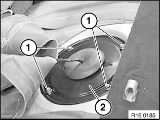
Release screws (1) and remove cover (2) from left and right sides of fuel tank.
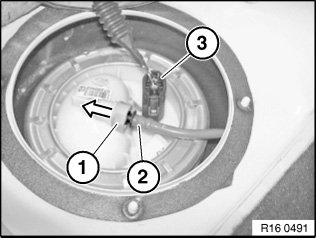
Left sensor unit:
Disconnect plug connection (1).
Press grey ring (2) towards sensor unit and pull out fuel feed line (3).
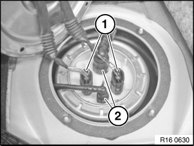
USA national version:
Disconnect plug connection (1).
Unlock and detach vent lines (2).
If necessary, remove fuel line for independent heating.
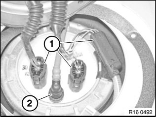
ECE national-market version:
Right sensor unit:
Disconnect plug connection (1).
Unlock quick-release fastener and detach vent line (2).
Installation:
Make sure quick-release fasteners engage correctly.
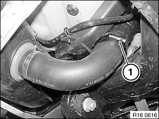
IMPORTANT:
There may still be residual amounts of fuel in the tank.
Catch and dispose of escaping fuel.
Release hose clamp (1) and detach fuel filler hose from fuel filler pipe.
If necessary, draw off residual amount of fuel via filler hose.
Installation:
Tightening torque 16 12 1AZ.
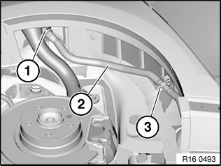
Unlock quick-release fastener (1) and detach vent line (2).
Detach vent line (2) from holder (3).
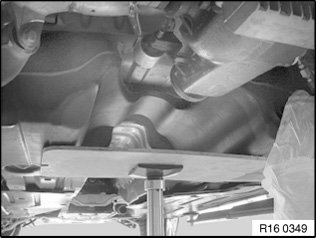
Heavily support the fuel tank.
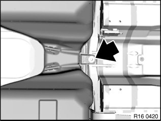
Unfasten nut.
Installation:
Replace self-locking nut.
Tightening torque 16 11 1AZ.
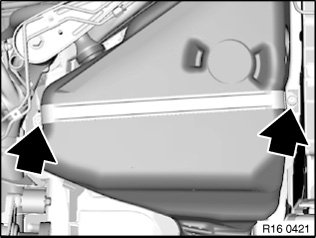
Release screws for tightening straps on left and right and remove tightening straps.
Carefully lower fuel tank.
IMPORTANT: Carefully feed the vent line through the body when lowering the fuel tank.
Installation:
Tightening torque 16 11 2AZ.
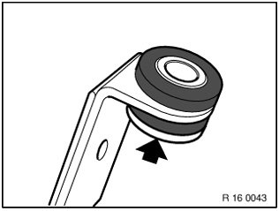
Installation:
Note rubber mount with spacer bush.
Wide collar on spacer bush points to screw head.
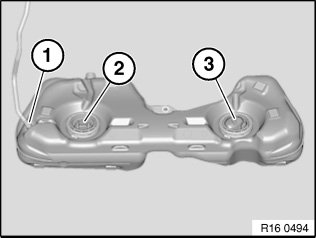
The following components must be modified when the fuel tank is replaced:
- Modify vent line (1)
- Modify right sensor unit (2)
- Modify left sensor unit (3)

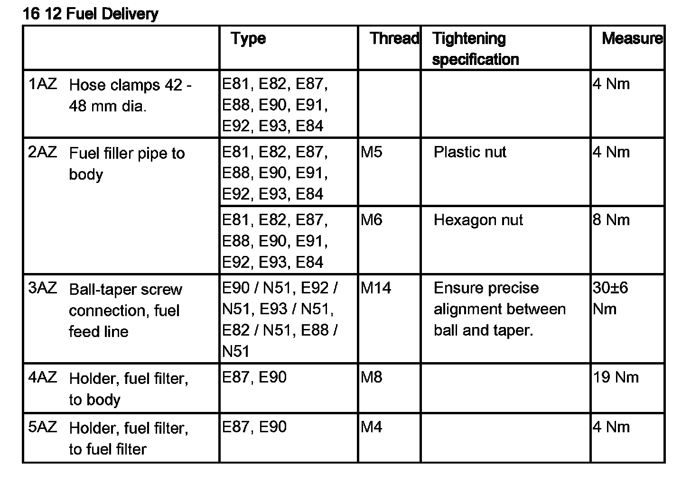